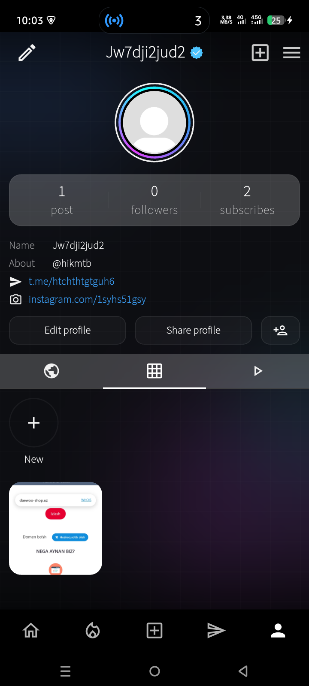
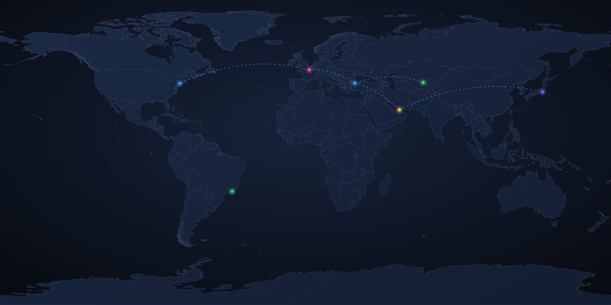
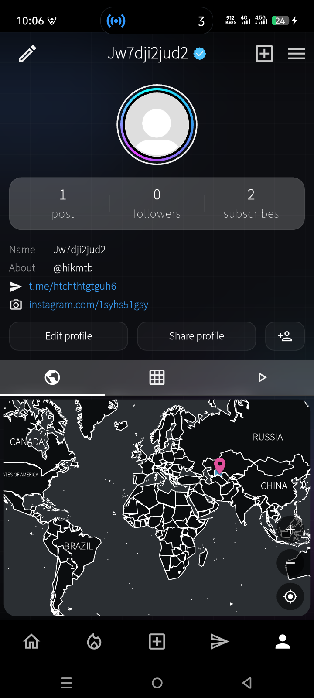
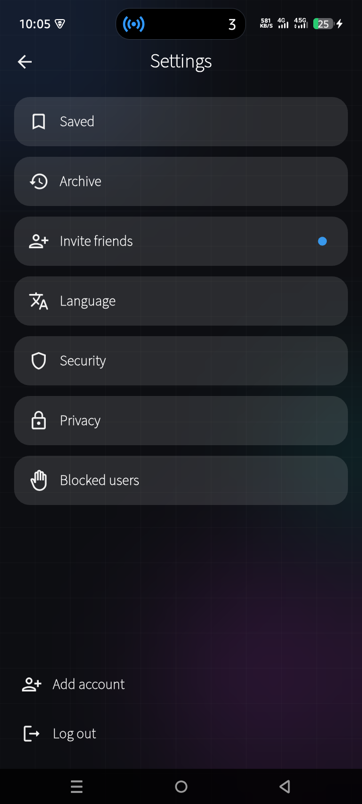

TreepNet postlaringizni tirik dunyo xaritasiga aylantiradi. Qayerda bo'lganingizni belgilang, sayohat pasportingizni to'ldiring va yo'lni do'stlar bilan baham ko'ring.


Ro'yxatdan o'tishdan birinchi shtampgacha — bir necha daqiqa.
TreepNet'ni Android'ga o'rnating va bir necha soniyada ro'yxatdan o'ting.
Rasm oling, xaritada joyni tanlang va ulashing.
Har bir viloyat yoritiladi, joylaringiz to'planadi.
Shtamp va darajalar yig'ing, do'stlaringizni taklif qiling.
Shunchaki yana bir lenta emas — xarita, pasport va odamlar bir joyda.
Siz bo'lgan viloyatlar interaktiv dunyo xaritasida yoritiladi.
Xaritadagi nuqtaga bosing — o'sha yerdagi postlarni ko'ring va o'zingiznikini qo'shing.
Shaharlar orasidagi yo'llaringiz xaritada chiziladi.
Qit'alar ochilib boradi — qancha ko'p sayohat, shuncha yorqin xarita.

Lahzalarni post yoki 24 soatlik story sifatida ulashing — like, javob va kim ko'rganini biling.
Viloyat, davlat va qit'alar darajalar, shtamplar va nishonlarga aylanadi.
Real vaqtli, maxfiy suhbatlar — offline-first, yo'lda ham ishlaydi.
Taklif kodingizni ulashing — har bir do'st sizga yangi nishon ochadi.
Like, izoh va obunalardan xabardor bo'lib turing.
Ilova o'zbek, rus va ingliz tillarida — o'zingizga qulayini tanlang.
Har bir ekran sayohatingizni markazga qo'yadi.
Xarita, postlar va havolalar bir joyda
Borgan joylaringiz yoritilib boradi

Shishasimon, zamonaviy interfeys
Yetib borgan har bir viloyat, davlat va qit'a nishonga aylanadi. Ilk pin'dan afsonaviygacha darajalarni oching.
TreepNet Android uchun mavjud. Ilovani yuklab oling va sayohatlaringizni ulashishga arziydigan xaritaga aylantiring.
O'zbekcha · Русский · English — Bepul